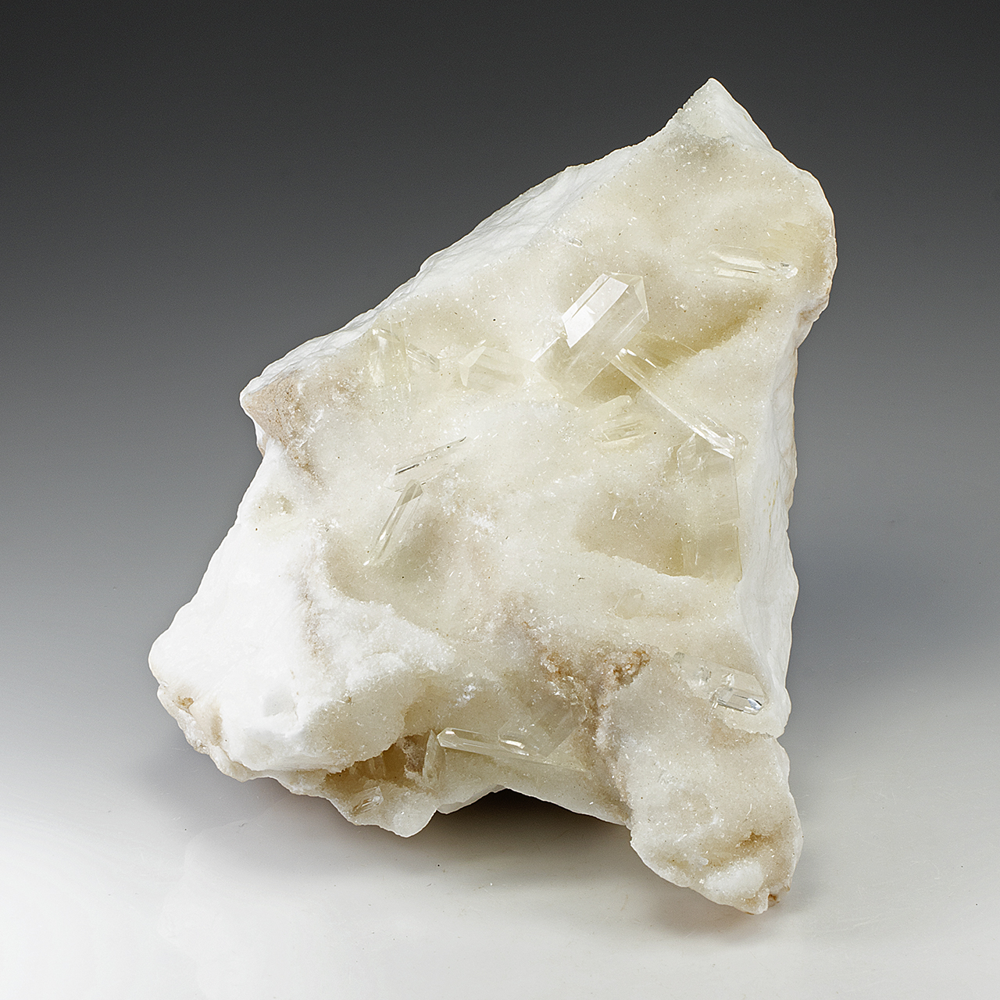

What is Gypsum? A Detailed Overview of Its Properties and Uses
Click here to see our crystal hunting maps Gypsum, a naturally occurring mineral, is indispensable in various industries due to its versatility and unique properties. Found in sedimentary rock formations, gypsum has been used since ancient times and continues to play a critical role in modern construction, agriculture, and manufacturing. This article delves into the fascinating world of gypsum, exploring its chemical composition, physical properties, geological formation, extraction processes, and wide-ranging applications. Additionally, we will examine the environmental impact and future market trends related to gypsum.
Before we dive into the specifics, let's take a moment to acknowledge the far-reaching impact of gypsum. In the realm of construction, it forms the backbone of drywall, providing fire resistance and soundproofing to our homes and offices. In agriculture, it enriches soils, boosting crop yields and promoting sustainable farming practices. Artists and craftsmen have harnessed its malleability to create exquisite sculptures and decorative pieces. Moreover, gypsum has found its way into medical applications, aiding in bone healing and dental procedures. From the mundane to the extraordinary, gypsum's influence permeates various aspects of our lives. So, as a rockhound, having gypsum as part of your rock collection is having a multipurpose extraordinary rock.
What is Gypsum?
At its core, gypsum is a naturally occurring mineral composed of calcium sulfate dihydrate (CaSO4·2H2O). It forms primarily through the evaporation of seawater in large basins.
This chemical formula reveals that each molecule of gypsum contains one calcium atom, one sulfur atom, four oxygen atoms, and two water molecules. This hydration state is crucial to gypsum's unique properties and applications.
Types of Gypsum
Gypsum exists in two primary forms: natural and synthetic gypsums.
1. Natural Gypsum
Natural gypsum is mined from geological deposits. These deposits are typically found in sedimentary rock formations created by the evaporation of ancient seas. Natural gypsum is prized for its purity and abundance.
2. Synthetic Gypsum
Synthetic gypsum is produced as a by-product of industrial processes, particularly from flue-gas-desulphurization (FGD) in power plants. This process removes sulfur dioxide from exhaust gases, resulting in the formation of calcium sulfate. Synthetic gypsum helps reduce environmental waste and provides a reliable supply for industrial use.
Natural Occurrence and Formation
Gypsum's journey begins in environments where water rich in dissolved calcium and sulfate ions undergoes evaporation. As the water disappears, the ions become concentrated and eventually precipitate out as gypsum crystals. Over geological time scales, these crystals accumulate, forming vast deposits of gypsum rock. The process is akin to the formation of salt flats, where evaporation leaves behind a crust of sodium chloride. These deposits are often extensive, forming large beds or layers that are mined for commercial use.
Physical and Chemical Properties of Gypsum
Physical Characteristics
- Color: Gypsum can appear white, gray, or colorless but can also exhibit shades of red, brown, or yellow due to impurities.
- Texture: It has a smooth, fine-grained texture, and can be easily scratched with a fingernail.
- Crystal Structure: Gypsum crystals are monoclinic, typically forming tabular, prismatic, or needle-like shapes. Selenite, satin spar, and alabaster are well-known varieties of gypsum crystals.
Chemical Properties
- Solubility: Gypsum is slightly soluble in water, contributing to its use as a soil conditioner.
- Reactivity: It is chemically stable under normal conditions but reacts with sulfuric acid, forming more soluble calcium sulfate.
Hardness and Density
- Hardness: Gypsum ranks 2 on the Mohs scale of hardness, indicating its softness.
- Density: It has a density of approximately 2.31 g/cm³.
Thermal Properties
- Dehydration: When heated, gypsum loses water molecules and converts to plaster of Paris (CaSO4·½H2O).
- Insulation: Gypsum has good thermal insulating properties, making it valuable in building materials.
Geological Formation of Gypsum
The geological processes that lead to gypsum formation are intricate and varied. Let's explore some of the most common scenarios:
1. Evaporite Deposits
As mentioned earlier, the evaporation of mineral-rich water is the primary mechanism for gypsum formation. This occurs in shallow marine environments, saline lakes, and even desert playas.
2. Volcanic Activity
Gypsum can also form through volcanic processes. When volcanic gases containing sulfur dioxide interact with water vapor and calcium-rich rocks, gypsum crystals can precipitate.
3. Hydrothermal Veins
Gypsum can be found in hydrothermal veins, which are fractures in rocks filled with mineral-rich fluids that originate from deep within the Earth's crust.
4. Weathering and Erosion
Existing rocks containing calcium sulfate minerals, such as anhydrite, can undergo weathering and hydration to transform into gypsum.
Different Locations of Gypsum
Gypsum is abundant worldwide. Major gypsum-producing regions include:
- United States: States like Oklahoma, Iowa, and Nevada have significant deposits.
- China: One of the largest producers, with extensive mining operations.
- Iran: Rich deposits in various regions contribute to its substantial production.
- Canada: Notable deposits in Nova Scotia.
Other countries with significant gypsum deposits include:
- Europe: Spain, France, Italy, and Germany are major gypsum producers in Europe.
- Asia: Thailand are leading sources of gypsum in Asia.
- Africa: Morocco and Tunisia have notable gypsum reserves in North Africa.
RELATED TOPIC: All You Need to Know About Citrine
How to Collect Gypsum as a Rockhound
For rockhounds, gypsum offers a fascinating array of specimens to collect, each with its unique charm and beauty. Here's a guide to help you embark on your gypsum-hunting adventures:
1. Research and Location
Start by researching potential gypsum-bearing locations in your area. Geological maps, online resources, and rockhounding clubs can provide valuable information on where to find gypsum deposits. Look for areas with sedimentary rock formations, salt flats, or historical mining sites.
2. Tools and Gear
Pack essential rockhounding tools like a rock hammer, chisel, safety glasses, gloves, and a sturdy backpack or bucket to carry your finds. A magnifying glass can help you identify gypsum crystals and assess their quality.
3. Identifying Gypsum
Gypsum crystals come in various forms, including clear, transparent selenite, fibrous satin spar, and massive alabaster. Look for soft, easily scratched crystals with a vitreous or pearly luster. Gypsum often occurs in association with other minerals like calcite, dolomite, and sulfur.
4. Collecting Techniques
When collecting gypsum, exercise caution and respect for the environment. Use your tools carefully to extract specimens without damaging the surrounding rock formations. Avoid collecting from protected areas or private property without permission.
5. Cleaning and Preserving
After collecting your gypsum specimens, gently clean them with water and a soft brush to remove dirt and debris. Avoid using harsh chemicals or abrasives, as they can damage the delicate crystals. Store your gypsum specimens in a cool, dry place to prevent dehydration and cracking.
Recommended Gears

How To Pick Your Pick
A reliable rock pick is essential for any rockhound. It helps in extracting specimens from the ground and breaking apart rocks to reveal hidden treasures. Check out our comparison table to find the rock pick that works best for you.
See Comparison TableBackpacks & Bags That Fit Just One More Rock
Sturdy backpacks and bags are important for carrying tools and collected specimens. Look for ones with multiple compartments and durable materials. Check out our comparison table to find the bag that works best for you.
See Comparison Table
Chisels & Brushes
Chisels are used to split rocks and access hidden specimens, while brushes help clean dirt off rocks and minerals, revealing their true features. Check out our comparison table to find the chisels and brushes that work best for you.
See Comparison Table
Gloves
Protective gloves are crucial for safeguarding your hands from sharp edges and rough surfaces. Check out our comparison table to find thegloves that work best for you.
See Comparison Table
Glasses
Safety glasses are essential to protect your eyes from flying debris when using tools. Always wear them to ensure your safety while rockhounding. Check out our comparison table to find safety glasses that work best for you.
See Comparison TableFirst Aid Kits
A well-stocked first aid kit is a must-have for any outdoor activity. Ensure it includes bandages, antiseptics, and other essentials. Check out our comparison table to find the first aid kit that works best for you.
See Comparison TableTips for Rockhounders:
- Join a local rockhounding club to connect with fellow enthusiasts and learn about new collecting sites.
- Attend gem and mineral shows to see a wide variety of gypsum specimens and learn from experienced collectors.
- Research the different types of gypsum and their specific collecting locations.
- Respect the environment and leave no trace when collecting.
Collecting Other Rocks
If you are interested in collecting other types of rocks and gemstones, there are many options to choose from. Some popular choices include:
- Agates: A type of quartz that forms in volcanic rock. They come in many different colors and patterns.
- Geodes: Hollow rocks that have been filled with minerals. They can be cut open to reveal beautiful crystals inside.
- Jasper: An opaque variety of chalcedony that comes in many different colors and patterns.
- Petrified Wood: Fossilized plant material that has turned into stone over time.
For more detailed information about different rocks and minerals, and where they can be found in the United States, click on the button below.
Extraction and Processing of Gypsum
Methods of Gypsum Extraction
Gypsum is extracted through both surface (open-pit) and underground mining methods. The choice of method depends on the depth and purity of the deposit. Surface mining involves removing overburden to expose the gypsum layer, which is then drilled, blasted, and transported for processing. Underground mining involves creating tunnels or shafts to reach deeper deposits.
Gypsum Processing Techniques
Once extracted, gypsum undergoes several processing steps:
- Crushing and Grinding: The mined gypsum is crushed into smaller pieces and ground into a fine powder.
- Calcination: The powdered gypsum is heated to remove water molecules, producing different forms of plaster depending on the temperature and duration of heating.
- Formulation: Additives may be mixed with gypsum to produce specialized products like drywall or plaster.
Historical and Cultural Significance of Gypsum
Gypsum's significance in human history dates back thousands of years. Ancient Egyptians used gypsum plaster to coat the walls of their tombs and temples, creating smooth surfaces for intricate paintings and hieroglyphs. The alabaster variety of gypsum, prized for its translucence and ease of carving, was used to craft exquisite sculptures and ornamental objects.
In medieval Europe, gypsum plaster became a staple in building construction. Its fire-resistant properties made it a valuable material for protecting wooden structures from devastating fires. During the Renaissance, skilled artisans used gypsum plaster to create elaborate ceilings, moldings, and decorative elements in palaces and cathedrals.
Industrial and Commercial Uses of Gypsum
Construction
- Drywall: Gypsum is a key component in drywall, also known as gypsum board or plasterboard, used extensively in modern construction.
- Plaster: Gypsum plaster is used for coating walls and ceilings, providing a smooth finish.
- Cement: It is added to cement to control the setting time and improve workability.
Agriculture
- Soil Conditioner: Gypsum improves soil structure, drainage, and aeration, and is used to reclaim sodic soils.
- Fertilizer: Provides essential calcium and sulfur nutrients to crops.
Manufacturing
- Molds and Casts: Used in the production of ceramics, dental molds, and other precision molds.
- Glassmaking: Gypsum is used as a fluxing agent in glass manufacturing.
Medical Applications
- Orthopedics: Gypsum bandages (plaster of Paris) are used to immobilize broken bones and fractures.
- Dental Impressions: Used to create accurate dental molds.
Arts and Crafts
- Sculpture: Gypsum plaster is a popular medium for sculptors.
- Decoration: Used in decorative plasterwork for ceilings and moldings.
Modern Applications and Innovations
Innovations in gypsum products have led to advanced applications:
- Lightweight Drywall: New formulations reduce the weight of drywall, making it easier to handle and install.
- Fire-Resistant Gypsum Board: Enhanced fire-resistance properties for safer buildings.
- Acoustic Gypsum Panels: Designed to improve sound insulation in buildings.
Things Not Known About Gypsum
- Crystal Habits: Gypsum crystals can grow to enormous sizes, with some selenite crystals in Mexico's Naica Mine reaching lengths of over 11 meters.
- Radiation Shielding: Gypsum is being explored for use in shielding against radiation in medical and industrial applications.
- Environmental Benefits: Gypsum from FGD helps reduce the environmental impact of power plants by recycling waste products.
Health and Safety Aspects
Safe Handling of Gypsum Products
Gypsum is generally safe to handle, but precautions should be taken to avoid inhaling dust, which can cause respiratory irritation. Wearing protective masks and ensuring good ventilation are recommended during handling and processing.
Health Hazards of Gypsum
Gypsum is considered non-toxic, but prolonged exposure to dust can lead to respiratory issues like asthma. Inhalation of large amounts of dust over time may lead to lung disease.
Gypsum in the Environment
Gypsum plays a role in the natural environment by:
- Soil Amendment: Improving soil quality and structure.
- Water Filtration: Used in some water treatment processes to remove impurities.
Future Trends and Market Outlook
The gypsum industry is poised for growth, driven by increasing demand in construction and agriculture. Innovations in sustainable and environmentally friendly gypsum products will likely shape the future market. Emerging applications in 3D printing and advanced composites also present new opportunities.
Conclusion
Gypsum, with its rich history and diverse applications, remains a vital mineral in modern society. From ancient construction to contemporary innovations, its properties and uses continue to evolve. Understanding gypsum's chemical composition, physical characteristics, and environmental impact is crucial for harnessing its full potential in various industries. As the gypsum market expands, ongoing research and development will drive new applications and sustainable practices, ensuring gypsum's relevance for years to come.